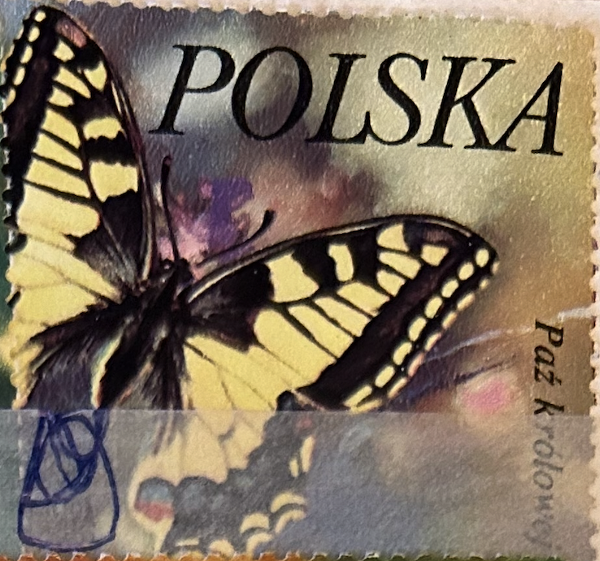
| SOURCE | TITLE| IMAGE MATCH | click to source page |
| eBay | Poland 2229 Butterflies | eBay | 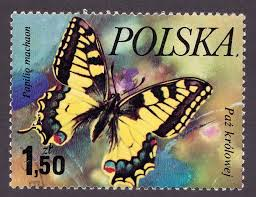 |
| HipStamp | Poland Stamp:1977 Colorful-Beautiful-Lovely Butterfly Used-Large Size Stamps | Europe - Poland, Stamp / HipStamp | 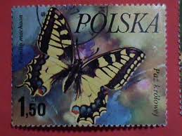 |
| Dreamstime.com | Butterfly Papilio Alexanor editorial stock image. Image of abdomen - 141764504 | 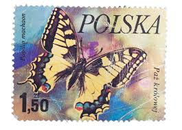 |
| Shutterstock | Butterfly Animal Print: Over 5,956 Royalty-Free Licensable Stock Photos | Shutterstock | 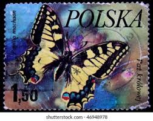 |
| | Uniwersytet Warszawski | Final mini e newsletter may 2012 - new version | 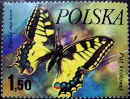 |
| Find Your Stamps Value | Vanessa Butterfly 10g Green stamp price, value | 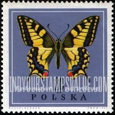 |
| iStock | Colias Hyale Pale Clouded Yellow Butterfly Stock Photo - Download Image Now - Animal, Black Color, Butterfly - Insect - iStock | 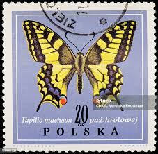 |
| Dreamstime.com | Postage Stamp Poland, 1967. Swallowtail Papilio Machaon Butterfly Editorial Photography - Image of collection, heritage: 224605312 | 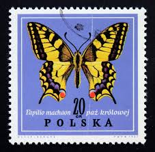 |
| eBay | RUSSIA / CHECHENIA 1996 UNISSUED BUTTERFLIES STRIP OF FIVE HARD TO FIND MNH | eBay | 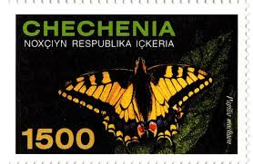 |
| Découvrez 900+ idées Dessin sur livre et bible sur ce tableau Pinterest | dessin, priere, biblique et bien plus encore | 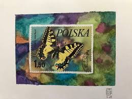 | |
| eBay | Polska Postage Stamp 1.50 Butterfly | eBay | 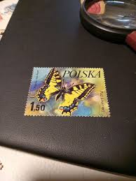 |
| Mexico - "Butterfly" Postage Stamp | Collectors Weekly | 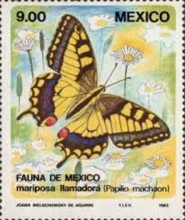 | |
| My collection : r/stamps | 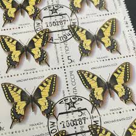 | |
| Colnect | Phonecard: Butterfly Ritariperhonen (Savonlinnan Puhelin Yhdistys (SPY), Finland(D Series) Suo:SPY-D74 📞 | 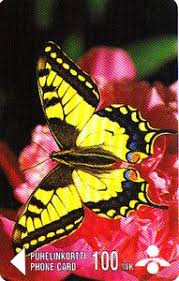 |
| Find Your Stamps Value | Insects: Apollo butterfly 1.55z Bright purple stamp price, value | 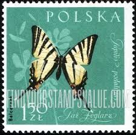 |
| Collectors Weekly | Mexico - "Butterfly" Postage Stamp | Collectors Weekly | 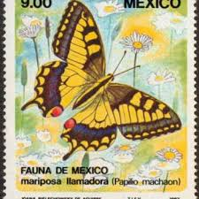 |
| eBay | 3 POLISH, POLSKA STAMP COLLECTION, STAMPED, OFF PAPER BUTTERFLIES | eBay | 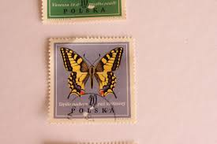 |
| Stamp Community Forum | Everything's Coming Up Butterflies! - Page 16 - Stamp Community Forum | 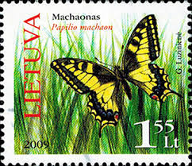 |
| Dreamstime.com | Butterfly Papilio Machaon editorial photo. Image of nature - 141764641 | 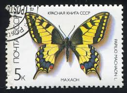 |
| buyhungarianstamps.com | 3050-3055 Poland - Butterflies (MNH) – Eastern Europe Postage Stamps | Hungaria Stamp Exchange | 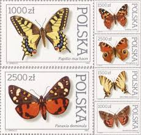 |
| Shutterstock | Ussr Circa 1987 Stamp Printed Ussr Stock Photo 97872029 | Shutterstock | 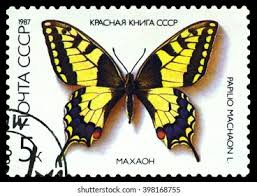 |
| Etsy | Buy Worldwide Butterfly Stamp Set / 1960 - 1975 / Poland, Chad, Grenada, Hungary, Central Africa, Bulgaria, Rwanda, Upper Volta, Maldives, Yemen Online in India - Etsy | 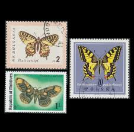 |
| eBay UK | Butterflies United States Stamps for sale | eBay UK | 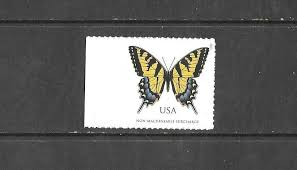 |
| Colnect | Stamp: Swallowtail (Papilio machaon) (Ukraine(Butterflies and Moths (2004)) Mi:UA 630,Sn:UA 538e,Ukr:UA 570,WAD:UA018.2004,Col:UA 2004.03.26-01e 📮 | 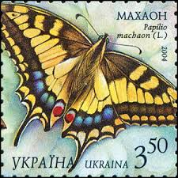 |
| treasurefoxstamps | 13c Butterfly Stamps .. Vintage Unused US Postage Stamps .. Pack of 20 – treasurefoxstamps | 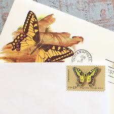 |
| Shutterstock | 2+ Hundred Butterfly Mahaon Royalty-Free Images, Stock Photos & Pictures | Shutterstock | 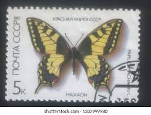 |
| grafnet.com.pl | Filters for Photoshop - Pixie Dust | 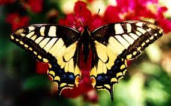 |
| CleanPNG | PNG Transparent Illustration - CleanPNG | 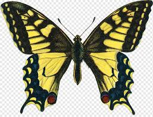 |
| Amazon.com | Pimpanicaille: pour clavecin (French Edition): Mourey, Colette: 9781976833458: Amazon.com: Books | 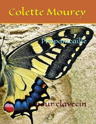 |
| eBay | Mint Never Hinged/MNH Nature Russian & Soviet Union 1991-2000 Year of Issue Stamps for sale | eBay | 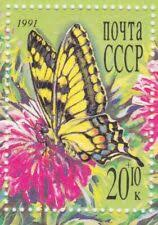 |
| Colnect | Stamp: Swallowtail (Papilio machaon ssp. syriacus) (Israel(Butterflies of Israel (2011)) Mi:IL 2208,Sn:IL 1886,Yt:IL 2112A,Sg:IL 2078a 📮 | 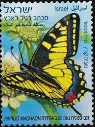 |
| eBay | Butterflies Saint Thomas and Prince (35) block used | eBay | 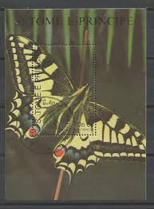 |
| Time of Celebration Ministries Church | Self-adhesive Stamps Booklet Wild Orchids Forever Stamps Booklet - 20 Self-Adhesive Postage Stamps RSVP Envelope Stamps | 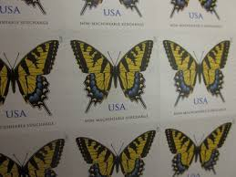 |
| eBay | ROMÂNIA LOT 59 POSTAL STATIONERY DIFERENT TOPICS | eBay | 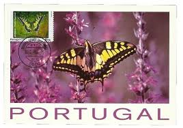 |
| eBay | Latvia Lettland Republic Official Mint MNH Stamps & Sheets Year Set Folder 1996 | eBay | 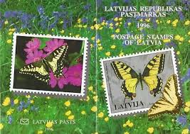 |
| loveletters.com | Vinyl Sticker; Butterfly Winder Stamp - Made By Shellie – Love Letters Shop | 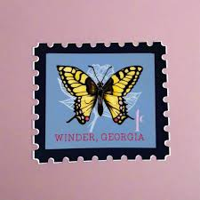 |
| Stamp Community Forum | Everything's Coming Up Butterflies! - Page 14 - Stamp Community Forum | 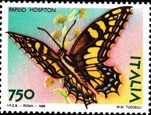 |
| Dreamstime.com | The Textured Surface of a Mossy Irish Dry Stone Wall Generative AI Stock Illustration - Illustration of rustic, history: 392481859 | 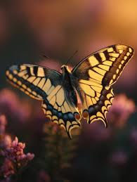 |
| stampsrussia.com | Stamps Russia 1987 : StampsRussia.com, Russian stamps at best prices! | 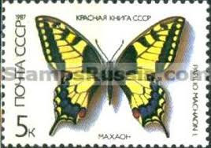 |
| eBay | Butterflies Liechtenstein Stamps for sale | eBay | 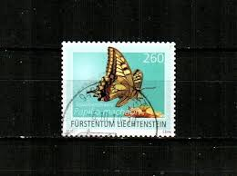 |
| Shutterstock | Poland 1961 December 30 150 Zloty Stock Photo 2314616599 | Shutterstock | 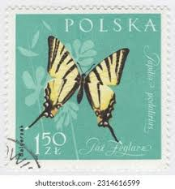 |
| 1990 Sao Tome and Principe - Butterflies | 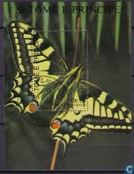 | |
| HipStamp | 4999 2015 Eastern Tiger Swallowtail Butterfly (71¢) Non-Machineable Surcharge | United States, General Issue Stamp / HipStamp | 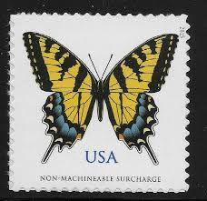 |
| Pošte Srpske | Фауна Републике Српске – Ливадски лептири – Web portal Pošta Srpske | 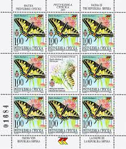 |
| Vecteezy | Vintage Postage Stamp with Butterfly. Retro Printable post stamp. Aesthetic cutout Scrapbooking elements for wedding invitations, notebooks, journals, greeting cards, wrapping paper 18243873 PNG | 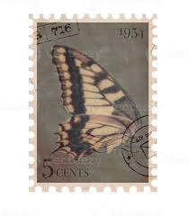 |
| Paź krolowej | 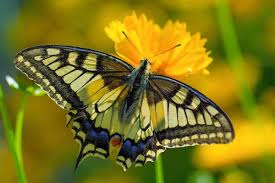 | |
| Find Your Stamps Value | Papilio Xuthus Linne - 호랑나비 20w Yellow & multicolored stamp price, value | 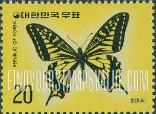 |
| norphil.co.uk | Postage stamp collecting. Great Britain stamps 2013 index | 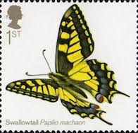 |
| iStock | Guyana Butterfly Stock Photo - Download Image Now - Animal, Butterfly - Insect, Close-up - iStock | 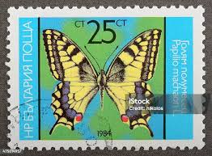 |
| Flourish Fine Writing | 5 Eastern Tiger Swallowtail Butterfly Forever Stamps // Non-Machinable – Flourish Fine Writing | |
| Etsy | 10 francobolli con farfalla coda di rondine, francobolli USPS da 13 centesimi d'epoca inutilizzati, 1977, gommati - Etsy Italia | |
| Pngtree | Beautiful Tiger Swallowtail Butterfly In Nature, Tiger Swallowtail, Swallowtail Butterfly, Butterfly On Flower PNG Transparent Image and Clipart for Free Download | |
| Stamp Community Forum | Everything's Coming Up Butterflies! - Page 19 - Stamp Community Forum | |
| Redimat | Redimat.com - Redi-Made Picture Frame Sets | |
| Shutterstock | Mongolia Circa 1963 Stamp Printed Mongolia Stock Photo 97354688 | Shutterstock | |
| New Mexico Writers | Home - New Mexico Writers | |
| Baśka na wysokości 😉 | ||
| eBay | Latvia 1996 COMPLETE YEAR 30 values+3 S/S Post Office folder Cat=€44 | eBay | |
| Wikimedia.org | File:Papilio ladakensis m 482.png - Wikimedia Commons |
{kind=link}